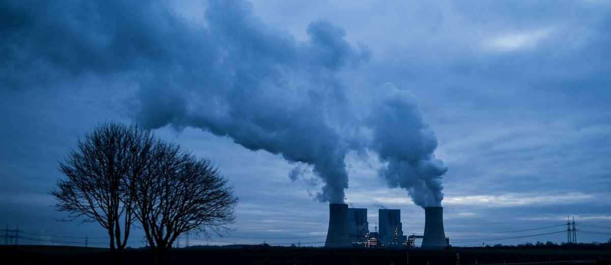
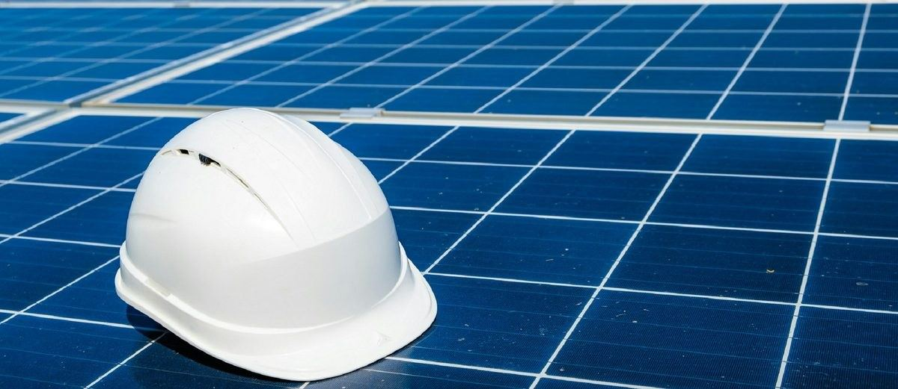
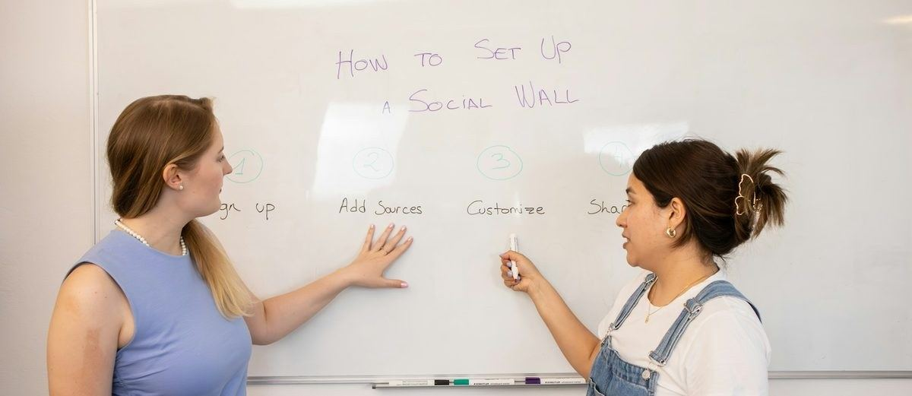

Writing for Technical Communication
Report structure, visual data, register, and the Poster Assignment briefing.
Department of Languages & General Studies · Faculty of Business and Communication (FPK) · UniMAP · Semester 1, 2026/2027
Week 4 taught you to read a technical text closely. This week you write one.
The three-part technical report, and how to turn a chart and a table into paragraphs a manager can act on.
The Writing Test (20%) in Week 10 gives you one figure, one table and 45 minutes. Today is the model for that test.
The Poster Assignment (20%) is briefed and groups are formed. Your SDG topic is chosen before you leave.
What will you get in the Week 10 Writing Test?
By the end of today you will be able to
Structure a short technical report
as Introduction, Findings and Recommendations, each doing a different job.
Turn non-linear data into linear prose
reading a chart or table and writing what it shows, in order of importance.
Control register
using the verbs of change, hedging language and parallel structure that managers expect.
Start the poster
with a group, an SDG-linked topic, a working title and a plan for Supervision 1.
The technical report
One document, three parts, three different jobs.
What a technical report is for
A technical report exists so that someone who was not there can make a decision. It is not a diary of what you did. It is an argument, built from evidence, that ends in an action.
Could the reader act on it without asking you a single question?The test of a good report
The reader
Usually busier and more senior than the writer. Reads the recommendation first, then checks the findings to see if it is justified.
The test of a good report
Could the reader act on it without asking you a single question?
In the Writing Test
You are the engineer. The reader is the Operations Manager. You have 220 to 260 words.
Which part of your report does a busy manager usually read first?
Three parts, three jobs
Readers expect this order. Break it and they lose their place.
Introduction
Why this report exists: the situation, the purpose, the scope. One to two sentences.
Findings
What the data shows: overall pattern, biggest change, the exception. Numbers included. No opinions yet.
Recommendations
What should be done, by whom, in what order, and why the evidence supports it.
Anatomy of a three-part report
Hover or tap a block. The manager reads the green block first.
The introduction: context, purpose, scope
What it must contain
- Context: who the report is for and what situation prompted it.
- Purpose: what the report does (analyses, compares, evaluates).
- Scope: what data was examined, over what period.
- Length: one or two sentences, roughly 30 to 40 words. No findings, no recommendations.
Model introduction
Formal, impersonal, and every word does work. Note there is no “I” and no “we”.
The findings: what goes in, in what order
1. The overall picture
Did the total rise, fall or stay level, and by how much? One sentence, with the two end figures.
2. The most important change
Which category moved most, and what were its numbers? This is the sentence the recommendation will rest on.
3. The exception
What went the other way, or did not move? Readers trust writers who mention what does not fit.
Keep it objective. Findings describe. They do not judge and do not recommend. Save “should” for Part 3.
Which sentence could not go in the findings?
Recommendations: five things every one of them needs
Week 6 will go deeper. For now, the rule from the workplace: a recommendation nobody can act on is not a recommendation.
A recommendation nobody can act on is not a recommendation.Week 5 · Recommendations
WHO
Which department or role carries it out.
WHAT
The specific measure, named exactly as in the source table.
WHEN
A start point or a deadline, or an order: first, then, finally.
ON WHAT CONDITION
The evidence that justifies it: the finding it answers, the cost, the saving.
HOW URGENTLY
A verb that matches the evidence: “should be installed immediately” versus “could be considered”.
Tap every card to earn the XP.
A full model report, 236 words
This report has been prepared for the Operations Manager of NorthStar Components to analyse water use across four departments in Q1 and Q2 and to recommend the most suitable water-saving measure.
Total water use rose from 280 to 319 thousand cubic metres between the two quarters, an increase of 13.9%. The cooling tower accounted for most of this change, rising from 96 to 118 thousand cubic metres (22.9%), which is 56% of the total increase. Production also increased, from 128 to 141 (10.2%), and landscaping from 22 to 27 (22.7%), although the latter is a small volume. Cleaning was the only department to fall, from 34 to 33.
It is recommended that the closed-loop cooling system be installed first. Although it is the most expensive option at RM 240,000, it targets the cooling tower, which is both the largest single consumer and the main cause of the increase, and it offers the highest saving of 20 to 25%. The low-flow fittings and leak detection programme should be carried out in parallel, since it costs only RM 30,000 and can be completed within six weeks. Rainwater harvesting could be reviewed once the first two measures have been evaluated.
Where the words go
Word count of each part of the model report above.
Read it aloud once. Then go to the next slide and hunt for its key parts.
Find it in the model report
What are the two end figures of the overall picture?
Which department is the biggest change?
What is the exception?
Now find the five elements in the first recommendation, then check
“It is recommended that the closed-loop cooling system be installed first. Although it is the most expensive option at RM 240,000, it targets the cooling tower, which is both the largest single consumer and the main cause of the increase, and it offers the highest saving of 20 to 25%.”
- WHAT: the closed-loop cooling system (named exactly as in Table 1).
- WHEN: “first” (an order).
- ON WHAT CONDITION: it targets the cooling tower, the largest consumer and main cause of the increase; RM 240,000; highest saving of 20 to 25%.
- HOW URGENTLY: “is recommended … be installed first”, a firm verb, unlike “could be reviewed” for rainwater harvesting.
- WHO: the reader the report is prepared for, the Operations Manager of NorthStar Components. The model does not name a department, so a stronger version would add one.
From visual data to prose
Charts and tables are non-linear. Reports are linear. Your job is the translation.
Reading a figure: six questions in order
Answer them in this order and the findings paragraph writes itself.
1 · Title and units
What is measured, in what unit, over what period?
2 · Axes and categories
What is being compared with what?
3 · Overall shape
Up, down, flat? What is the total change?
4 · The extremes
Highest, lowest, biggest change.
5 · The exception
What goes the other way?
6 · The link
Which finding connects to which option in the table?
The data: Figure 1
NorthStar Components, Kulim. Water used by department, in thousands of cubic metres, Q1 and Q2 2026.

Figure 1. Water use by department, Q1 and Q2 2026. Source: NorthStar Components facilities log (teaching example).
Add up the bars. What happened to the total?
Which bar pair goes the other way?
Change from Q1 to Q2
Thousand m³. Read the size, not only the percentage.
Who drove the rise?
Share of the +39 thousand m³ total increase.
The options: Table 1
Three ways the company could reduce its water use. In the Writing Test you will always get one figure and one table like these.
| Measure | Cost | Estimated saving | Time to install | Where it applies |
|---|---|---|---|---|
| Closed-loop cooling system | RM 240,000 | 20 to 25% | 4 months | Cooling tower |
| Rainwater harvesting | RM 85,000 | 6 to 9% | 4 months | Landscaping, cleaning |
| Low-flow fittings and leak detection | RM 30,000 | 4 to 7% | 6 weeks | All departments |
Three options, side by side
The most expensive option also offers by far the highest saving. Grey tracks show 0 to 25%.
The biggest change in Figure 1 was the cooling tower. Which option links directly to it?
Non-linear to linear: three sentence patterns
Three sentences, about 70 words, in this order. That is a findings paragraph.
01 · The overall movement
“Total water use rose by 13.9% between Q1 and Q2, from 280 to 319 thousand cubic metres.”
[total] [verb of change] by [%], from [start] to [end].
02 · The most important change, with numbers
“The cooling tower recorded the sharpest increase, from 96 to 118 thousand cubic metres (22.9%), and accounted for over half of the total rise.”
[category] recorded the [superlative] [noun of change], from [a] to [b] ([%]).
03 · The part that goes the other way
“Cleaning was the only department to fall, by a small margin, from 34 to 33.”
[category] was the only [group] to [opposite verb], from [a] to [b].
The three patterns, colour-coded
The same colour means the same job in every sentence.
01 · The overall movement
Total water usetotal roseverb by 13.9%percent between Q1 and Q2, from 280start to 319end thousand cubic metres.
02 · The most important change
The cooling towercategory recorded the sharpest increasesuperlative + noun, from 96start to 118end thousand cubic metres (22.9%percent), and accounted for over half of the total riseshare.
03 · The part that goes the other way
Cleaningcategory was the only departmentgroup to fallopposite verb, by a small margin, from 34start to 33end.
Fill the patterns from memory
Use Figure 1. Type one word or number in each gap, then press Check.
Total water use by 13.9% between Q1 and Q2, from to thousand cubic metres.
The cooling tower recorded the increase, from 96 to 118 thousand cubic metres (22.9%), and for over half of the total rise.
Cleaning was the department to , by a small margin, from 34 to .
The language of change
Use precise verbs. “Went up” and “went down” are B1. “Escalated” and “contracted slightly” are C1.
A map of the language of change
Follow the line: every stretch has its own verbs.
B1 says “went up”. C1 says “escalated”. B1 says “went down”. C1 says “contracted slightly”.
| Direction | Verbs | Nouns | Adverbs and adjectives |
|---|---|---|---|
| Up | rise, increase, grow, climb, surge, escalate | a rise, an increase, growth, a surge | sharply, steadily, slightly, marginally; a sharp / steady / slight rise |
| Down | fall, decrease, decline, drop, contract, plummet | a fall, a decrease, a decline, a drop | sharply, gradually, slightly; a marked / gradual / slight fall |
| No change | remain stable, stay level, plateau, hold steady | stability, a plateau | broadly, largely, roughly stable |
| Highest and lowest | peak at, reach a high of; bottom out at, reach a low of | a peak, a high; a trough, a low | the highest / lowest recorded |
Sort the language of change
Which version sounds most like a C1 technical writer?
Comparison and proportion
| What you want to say | Patterns you can use |
|---|---|
| A share of the whole | X accounted for 56% of the total increase. X represented just over a third of all water used. |
| Comparing two figures | X was almost twice as high as Y. X exceeded Y by 23 thousand cubic metres. |
| Putting things in order | X was the largest consumer, followed by Y, while Z used the least. |
| Speed of change | X rose in every month, whereas Y fluctuated. |
| Linking finding to option | Since the cooling tower drove most of the increase, the closed-loop system, which targets it directly, offers the largest saving. |
Which pattern would you use to connect Figure 1 to Table 1?
Register and hedging
Engineering figures are estimates. Your verbs must say so.
“Installing the closed-loop system will cut water use by 25% and will solve the problem.”
“will”, “solve”, “25%” as a certainty. The table says 20 to 25%, estimated. A manager who reads “will” and sees 18% stops trusting you.
“Installing the closed-loop system could reduce water use by up to 25%, which would largely address the increase seen in Q2.”
could, up to, would largely: probability rather than promise. This is the register of an engineer who knows estimates are estimates.
The certainty scale
The table says 20 to 25%, estimated. Your verbs must say so.
Parallel structure
Items in a list must share a grammatical form. It is the difference between a report and a set of notes.
“The measure is cheap, quick to install, and it also saves a lot of water.”
Adjective, adjective phrase, then a whole clause. The list changes shape halfway through, and the reader stumbles.
“The measure is inexpensive, quick to install and effective.”
Three adjectives, one shape. Lists of actions, criteria or benefits should always match grammatically.
Where does the “not parallel” list break its shape?
Write the findings paragraph
Include
- The overall movement with both end figures.
- The biggest change, with its numbers and its share of the total.
- The exception.
- One verb from the language-of-change table that you have never used before.
Do not include: any recommendation. Any “I” or “we”. Any figure that is not in the chart.
Use Figure 1 and Table 1. Write 70 to 90 words. Use the past simple for the data period.
Compare your paragraph with the model
Check your answer: model findings, 84 words
“Total water use at NorthStar Components rose by 13.9% between Q1 and Q2, from 280 to 319 thousand cubic metres. The cooling tower recorded the sharpest increase, from 96 to 118 thousand cubic metres (22.9%), and accounted for over half of the total rise. Production and landscaping also grew, by 10.2% and 22.7% respectively, although landscaping remains a small volume. Cleaning was the only department to fall, by a small margin, from 34 to 33.”
What makes it strong
Three patterns in order. Every number is from the chart. One percentage is calculated, not copied. The exception is named. No recommendation has leaked in.
Now check your own draft
- My three patterns are in order: overall movement, biggest change, exception.
- Every number comes from the chart.
- I used the past simple for the data period.
- I named the exception.
- No recommendation, no “should”, no “I” or “we”.
Poster Assignment briefing
Group task. 20% of your grade. Submitted online in Week 12.
The task
What
One A1 technical poster (PDF) that presents an engineering problem linked to a Sustainable Development Goal, three problems, three solutions, and a recommendation.
Who
Groups of four. One designated leader submits. All names and matric numbers on the poster.
Weight and outcome
20% of the course, group mark. Assesses CO2: producing well-structured technical texts by synthesising and evaluating multiple sources.
When
Briefing today (Week 5). Supervision 1 in Week 6. Supervision 2 in Week 10. Final submission online in Week 12.
How many problems and solutions does the poster need?
Choosing an SDG-linked topic
Pick a goal, then a real engineering system, then a place. “Water” is a topic. “Cooling-tower water use in a Kulim electronics plant” is a poster.

Affordable and clean energy
Rooftop solar for a UniMAP hostel block. Battery storage in tropical heat. Energy audit of a workshop.
Clean water and sanitation
Cooling-tower water recycling. Rainwater harvesting for a campus. Leak detection in an old pipe network.
Industry and responsible production
Waste reduction on a production line. Predictive maintenance to cut scrap. Packaging redesign.
Sustainable cities
Flood-resistant housing in Kelantan. EV charging for a small town. Noise on a construction site.
From a goal to a poster
Pick a goal, then a real engineering system, then a place.
Which one is a poster, not just a topic?
Poster structure
Same logic as the report: context, evidence, action. The reader’s eye moves down each column in turn.

01 · Title and group
Names the goal and the system. Group members and matric numbers.
02 · Introduction
How big is the problem, for whom? One cited statistic. Why this SDG.
03 · Three problems
Each with evidence: a figure, a photograph or a cited source.
04 · Three solutions
Each compared on cost, effect and time. A verbal table works well here.
05 · Conclusion and recommendation
Which solution first, and why. One large number the reader will remember.
06 · References
APA 7 or IEEE, consistent. Every figure and every fact on the poster traced to a source.
The A1 poster: six sections, one reading path
The eye moves down each column in turn. Hover or tap a section.
Poster timeline
Three checkpoints before submission. Miss one and the next becomes much harder.
Weeks 5 to 14 at a glance
You are here: Week 5. Miss a checkpoint and the next becomes much harder.
| Week | Type | What happens |
|---|---|---|
| 5 | Briefing | Poster briefing, groups formed |
| 6 | Supervision | Supervision 1: title and scope |
| 7 | Teaching | Graphics and visuals |
| 8 | Assessment | Reading Test 30% |
| 9 | Teaching | Language skills |
| 10 | Assessment | Writing Test 20% and Supervision 2: outline and draft |
| 11 | Teaching | Group communication |
| 12 | Submission | Poster submission 20% |
| 13 | Assessment | Speaking Part 1 |
| 14 | Assessment | Speaking Part 2 |
What do you bring to Supervision 2 in Week 10?
How the poster is marked
Indicative criteria, standardised to a five-point scale. The official rubric is in the Poster Assignment brief on the course portal and will be used by all markers.
Content and evidence
Clear SDG link. Three problems and three solutions, each supported by a cited source. At least three credible sources, two from Scopus or WoS.
Organisation and structure
Title, introduction, problems, solutions, conclusion, references, in a reading path the eye can follow.
Visual design and integration
Text-to-graphics balance of about 60:40. Every visual has a caption and is referred to in the text. Readable from two metres.
Language and register
Formal, concise, parallel, hedged where the evidence is an estimate. Free of errors that change meaning.
Referencing
APA 7 or IEEE, applied consistently in the text and in the reference list. No uncited figures.
How many of your sources must come from Scopus or WoS?
Groups and roles
Four people, four jobs. Everyone writes. Nobody only designs.
Leader
Keeps the timeline, submits the file, speaks for the group at supervisions.
Researcher
Runs the source grid from Week 3. Owns the reference list.
Data and visuals
Builds the figures and the comparison table. Owns captions and integration.
Editor
Owns register, parallel structure, hedging, and the final proofread. Reads everything aloud once.
Six ways posters lose marks
A number without a source is an opinion in a costume.Week 5 · Six ways posters lose marks
A topic, not a problem
“Renewable energy in Malaysia” has no reader, no place and no decision. Narrow it until a manager could act on it.
Uncited figures
A number without a source is an opinion in a costume.
Walls of text
If it is over 40% text, it is a report pasted on a board. Cut, then chart.
Visuals nobody mentions
A chart the text never refers to is decoration. “As Figure 2 shows…” is the minimum.
Three solutions, no comparison
Listing options is not evaluating them. Compare on the same criteria: cost, effect, time.
Mixed referencing
APA in the text and IEEE in the list. Pick one in Week 6 and never switch.
Tap every card to earn the XP.
Preparing for Supervision 1
Bring this to Supervision 1 (Week 6)
- Group of four formed, leader named, WhatsApp group created.
- SDG chosen, and one engineering system in one place named.
- Working title written: it names the goal or makes it obvious.
- Five candidate sources found (Week 3 grid), two from Scopus or WoS.
- One paraphrased claim with an APA citation from each source you are keeping.
- One question you want to ask your supervisor.
Choose the topic, write the title
Pick one SDG
From the four families shown, or propose another.
Name a real system
A plant, a building, a process, a road.
Name the place
Write a working title
No more than 15 words.
Write your group’s working title (15 words or fewer).
Test your title
- Does it name the goal, or make it obvious?
- Does it say where?
- Could a manager tell what decision the poster leads to?
Then each group reads its title aloud.
Before you leave today
- I can name the three parts of a technical report and say what each one does.
- I can write the three findings sentences: overall movement, biggest change, exception.
- I can use at least six verbs of change and two hedging forms.
- I can spot a list that is not parallel and fix it.
- My group has a topic, a place, a working title and a leader.
Next week: conclusions, recommendations and referencing
- Drawing conclusions from evidence.
- Writing recommendations that can be acted on.
- APA 7 and IEEE, in the text and in the list.
- Poster Supervision 1: title and scope check.
Bring
- The Supervision 1 checklist, completed.
- Your five sources.
- One draft recommendation sentence based on Figure 1 and Table 1.
Start now: one recommendation sentence based on Figure 1 and Table 1. Try to include WHO, WHAT, WHEN, ON WHAT CONDITION and HOW URGENTLY.
Image and content credits
Original slide photographs from Unsplash, used under the Unsplash License: Scott Graham, Wesley Pacifico, Andreea Avramescu, 1981 Digital, Khoiru Abdan, Navy Medicine, Evgeniy Alyoshin, X F, Simon Kadula, Troy Mortier, Vitaly Gariev.
Charts, diagrams and worked examples prepared for SMB31202, Department of Languages & General Studies, FPK, UniMAP. NorthStar Components and its figures are teaching examples.
Introduction → Findings → Recommendations.
You can now turn a chart and a table into a report a manager can act on. See you at Supervision 1.
← Back to all weeks